Docs Home
In LogicLoop, you can add Action Destinations to configure where your actions should be taken. This is where your rule’s query results will be forwarded to.
You can add a new Action Destination from the Destinations tab. We currently support email, Slack alerts, PagerDuty alerts, or hitting a custom API endpoint (this can be an internal API endpoint to trigger custom actions in your system, or an external API endpoint like Zapier to trigger additional workflows).
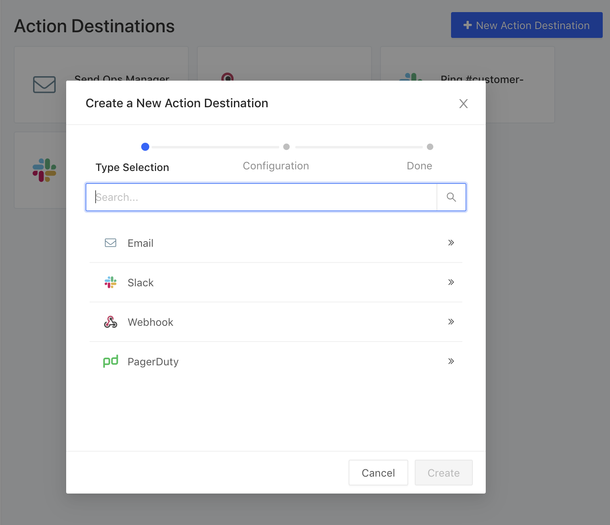
Once you’ve set up an Action Destination, you can integrate it into an action of a rule by following these steps.
Email
To have your rule send you an email, just set the name and email address, and optionally a subject template.
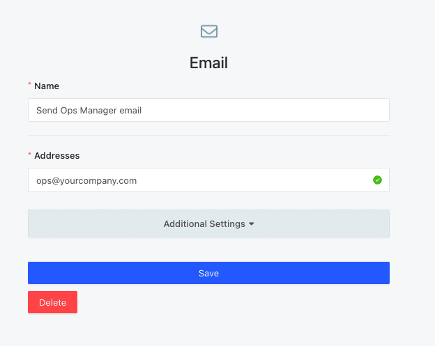
Slack
To have your rule ping a Slack channel, just set the name, channel, and provide a “Slack Webhook URL”,
which you can create here.
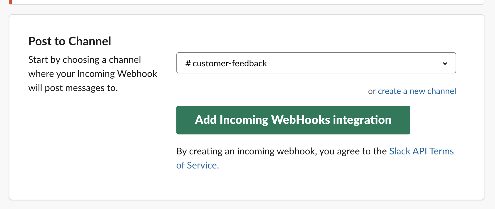
Once you select a channel and click
‘Add Incoming WebHooks integration’, you can copy the Slack Webhook URL.
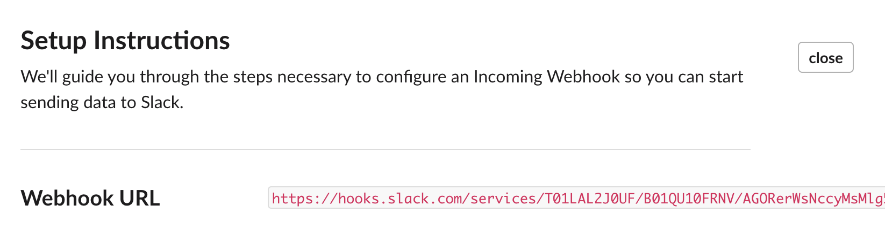
You add this new destination for any alert that you want to be sent to this Slack channel.
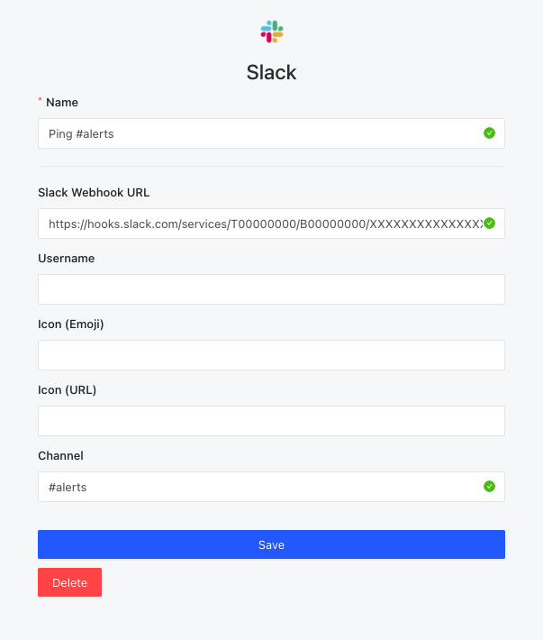
Webhook (Zapier Example)
You can also set up the action to call any custom API endpoint, internal or external. In this example, we retrieve a webhook endpoint from Zapier so that our LogicLoop rule can trigger a Zap.
First, create a Zap in Zapier that is triggered by “Webhooks by Zapier.”
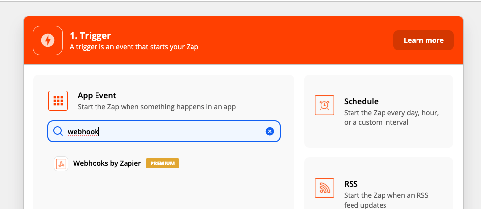
Then choose the event ‘Catch Hook’
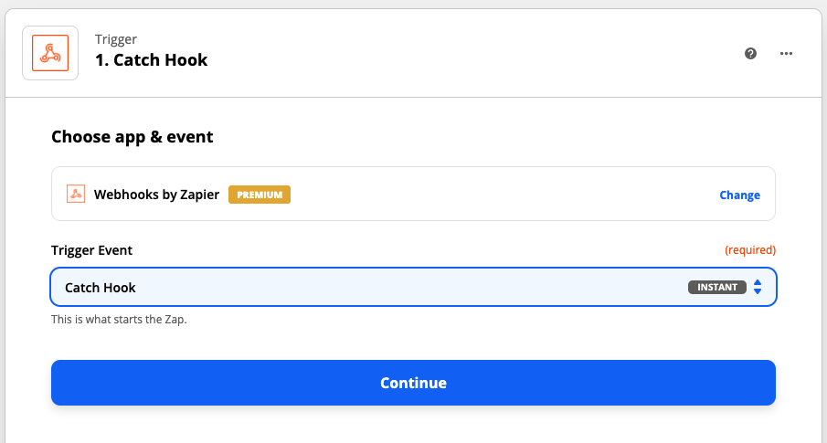
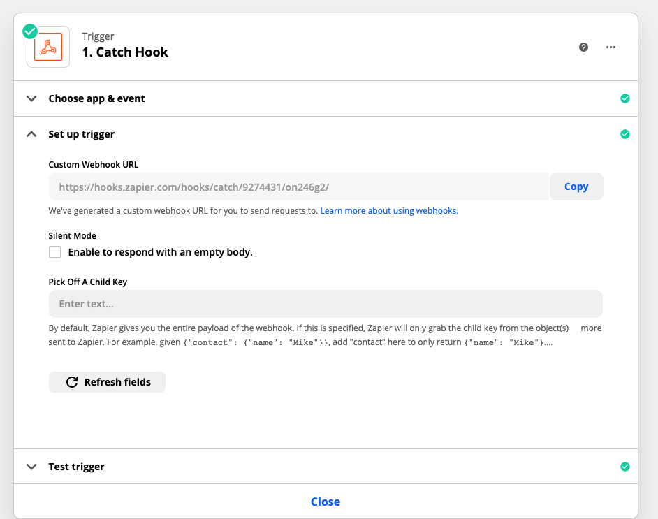
Copy and paste the "Custom Webhook URL" to get your custom endpoint. Create an action destination in LogicLoop of type Webhook and put in the URL you copied from Zapier.
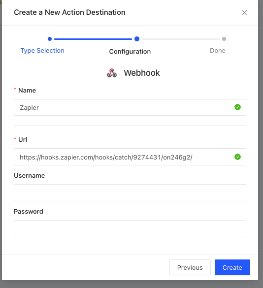
You will want to run your rule to test that the endpoint is being hit properly. Then, you can go into Zapier and add whatever action you would like Zapier to take when it's triggered. For example, you can have Zapier create a new Google Sheets row with the data from your LogicLoop query.
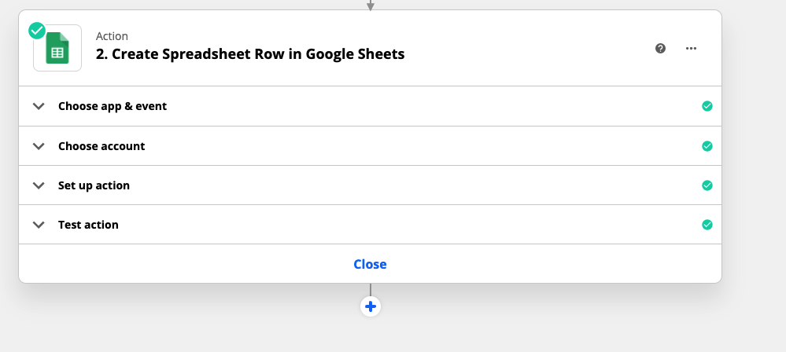
You will have to do some mapping to ensure the data passed from LogicLoop is in the format you want to be passed into the Zapier action.
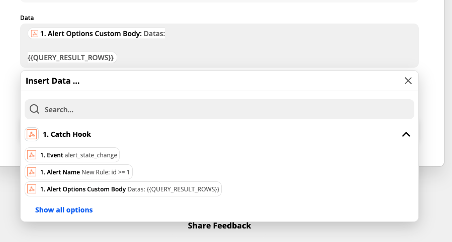
With Zapier you can set up your LogicLoop queries to trigger any number of actions such as creating Google Docs, Sheets, Calendars, Forms, creating Trello/JIRA tasks, posting to social media, syncing to Dropbox, Salesforce, Mailchimp, and many more.
You can explore all Zapier integrations here.
In this example we used Zapier as the webhook endpoint being hit, but you can trigger any system that exposes an API!